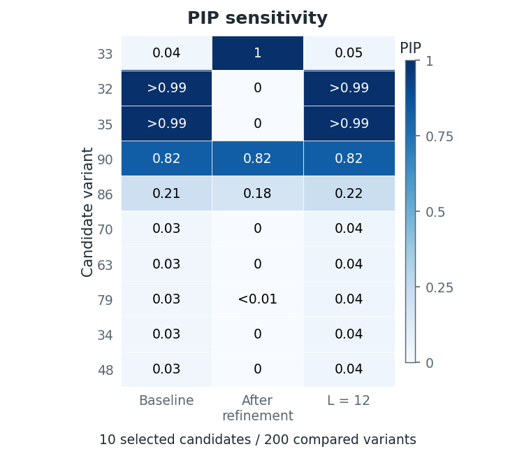

prusie: SuSiE fine-mapping in Python

Fine-mapping seeks to identify variants that affect a trait despite uncertainty from linkage disequilibrium (LD). prusie fits SuSiE (Sum of Single Effects) models in Python with a Rust solver, allowing multiple effects within a region.
Fits accept association summary statistics with signed LD, centered sufficient
statistics, or individual-level data. Results include component posterior
probabilities (alpha), marginal posterior inclusion probabilities (PIPs) and
credible sets. See the statistical model for assumptions and
numerical accuracy for comparisons with susieR 0.16.6.
Installation
From the prusie 0.3.0 source checkout, use CPython 3.10–3.13 and install the build requirements, including the pinned Rust toolchain:
cd prusie
python -m venv .venv
. .venv/bin/activate
python -m pip install '.[analysis]' --config-settings=build-args="--locked"
NumPy is the only required Python dependency for core fitting. The optional
analysis extra installed above adds SciPy for sparse inputs, LD diagnostics
and advanced RSS models, and Matplotlib for plotting. Fitting does not require
R. To install without Rust or a compiler, use a compatible
prebuilt wheel.
Example
Fit the packaged 500-variant synthetic toy example offline and list its retained credible sets (CS):
import prusie
example = prusie.load_example()
fit = prusie.susie_rss(**example["inputs"], **example["parameters"])
summary = prusie.summarize(fit, example["inputs"]["R"], z=example["inputs"]["z"])
print(prusie.summary_text(summary).splitlines()[0])
print(f"IBSS: {fit.convergence['stop_reason']} ({fit.niter} sweeps)")
for cs in summary["credible_sets"]:
print(f"CS {cs['component_id']}: {', '.join(cs['members'])}")
Expected output:
500 variants; 2 retained credible sets; 2 active components.
IBSS: criterion_satisfied (3 sweeps)
CS 0: syn0100
CS 1: syn0350
Component IDs are zero-based. The quick-start tutorial explains PIPs and credible sets, then adds figures and an offline report.
Accuracy and performance
The comparison uses SuSiE-RSS fits for FinnGen R13 type 2 diabetes GWAS loci and GTEx v11 Whole_Blood eQTL analyses. Time and memory ratios below are susieR divided by prusie.
Measured prusie 0.3.0 against fresh susieR 0.16.6 fits.
| Analysis | Cases | Complete-call speed-up¹ | Fitting-stage speed-up¹ | Complete-call sum-of-medians² | Peak RSS ratio³ |
|---|---|---|---|---|---|
| GWAS | 200 | 49.2× | 55.4× | 42.9× | 3.66× |
| eQTL | 14157 | 26.6× | 29.8× | 26.6× | 3.77× |
¹ Sum of three retained R times divided by the corresponding prusie total, on exclusive AMD EPYC 7742 nodes. The fitting stage excludes input/LD preparation. ² Sum of within-case R medians divided by the sum of prusie medians. ³ Median paired R/prusie fresh-process peak RSS from the earlier local AMD EPYC 9754 measurements, including interpreter and inputs. Runtime and memory have separate origins.
Runtime uses one numerical thread per fit on exclusive AMD EPYC 7742 nodes, with complete-call and fitting-stage measurements from the same calls. Memory retains the earlier local AMD EPYC 9754 measurements, including the interpreter, inputs and returned fit. See performance for methods and software identities, and numerical accuracy for the complete-alpha comparison, individual exceedances and convergence diagnostics.
Sensitivity and refinement
The official susieR toy example shows a fit that meets its stopping rule before refinement finds a higher evidence lower bound (ELBO). Refinement changes the singleton credible sets, while a set of strongly correlated variants remains unresolved.


Increasing the maximum number of single-effect components, L, retains the
baseline's credible sets in this example. The
saved report shows every retained
credible set and separate LD panels for each set's top variant.
Documentation
- Inputs, alignment and priors: input routes, variant order, effect alleles and prior weights.
- Statistical model: assumptions, single-effect components, PIPs and credible sets.
- Python API: fitting functions, options and result fields.
- Convergence and refinement: stopping diagnostics, continuation and alternative starting solutions.
- Sensitivity and LD diagnostics: model comparisons and consistency between z-scores and LD.
- Reproducibility: data sources, reference fits and regeneration of benchmark tables and figures.
Citation and license
Please cite SuSiE, Wang et al. (2020) and
SuSiE-RSS, Zou et al. (2022)
for the statistical methods. Include the installed prusie version
(prusie.__version__); software citation metadata are in
CITATION.cff.
Wenxin Jiang is the author and maintainer. No DOI is assigned to the software.
Copyright © 2026 Wenxin Jiang. Licensed under GPL-3.0-or-later; see third-party notices for upstream attribution.